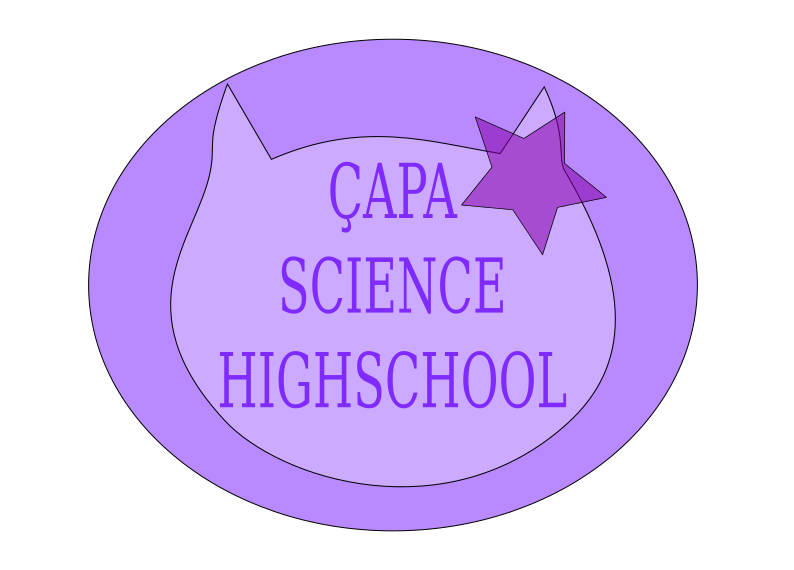
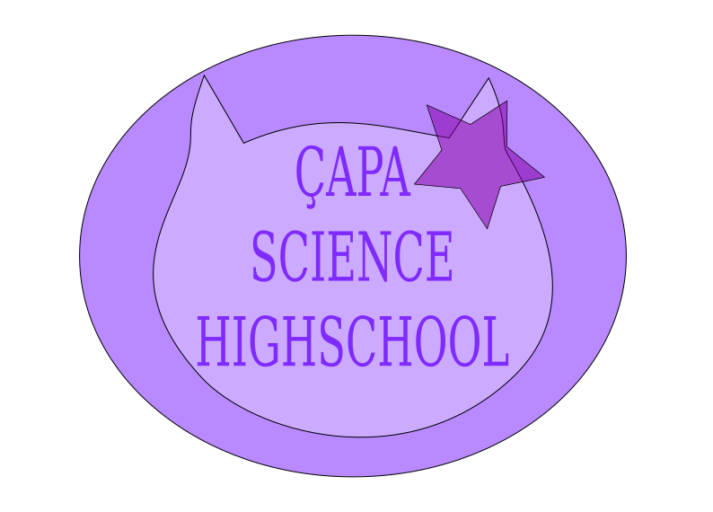

| Field | Number of students |
|---|---|
| Computer Engineering | 7 |
| Mechanical Engineering | 6 |
| Electrical Engineering | 11 |
| Industrial Engineering | 5 |
| Dentistry | 4 |
| Medicine | 37 |
| Others | 16 |
Most students of Çapa Science Highschool get good results in the central university placement exam YKS. Here are lists of students that ranked in top 500 examinees in Turkey in different fields.
MF(mathematics-natural sciences) Field
- Gizem Yaşa
- Fatih Demir
- Ertuğrul Talha Tekeş
- Altan Bora Menekşe
- Heval Gündoğdu
- Baran Parlak
- Muhammed Şamil Kurt
- Eda Nur Sarıçam
Foreign Languages Field
- Gizem Yaşa
- Altan Bora Menekşe
- Salih Mert Çetin
- Elif Sena Arslanoğlu
TM(literature-mathematics) Field
- İremnur Çiftçi